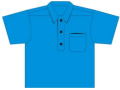

Closure
| Closure is when an operation (such as "adding") on members of a set (such as "real numbers") always makes a member of the same set. |
So the result stays in the same set.
Example: when we add two real numbers we get another real number
3.1 + 0.5 = 3.6
This is always true, so: real numbers are closed under addition
Example: subtracting two whole numbers might not make a whole number
4 − 9 = −5
−5 is not a whole number (whole numbers can't be negative)
So: whole numbers are not closed under subtraction
This is a general idea, and can apply to any sort of operation on any kind of set!

Example: the set of shirts
For the operation "wash", the shirt is still a shirt after washing.
- So shirts are closed under the operation "wash"
For the operation "rip", a small rip may be OK, but a shirt ripped in half ceases to be a shirt!
- So shirts are not closed under the operation "rip"
Sets
A set is a collection of things (usually numbers). Examples:
- Set of even numbers: {..., -4, -2, 0, 2, 4, ...}
- Set of odd numbers: {..., -3, -1, 1, 3, ...}
- Set of prime numbers: {2, 3, 5, 7, 11, 13, 17, ...}
- Positive multiples of 3 that are less than 10: {3, 6, 9}
Let's look more closely at one set:
Example: Odd numbers {..., -3, -1, 1, 3, ...}
Is the set of odd numbers closed under the simple operations + − × ÷ ?
- Adding? 3 + 7 = 10 but 10 is even, not odd, so no
- Subtracting? 11 − 3 = 8 but 8 is even, not odd, so no
- Multiplying? 5 × 7 = 35 yes ... in fact multiplying odd numbers always produces odd numbers, so odd numbers are closed under multiplication
- Dividing? 33/3 = 11 which looks good! But try 33/5 = 6.6 which is not odd, so no
As we just saw, just one case where it does NOT work is enough to say it is NOT closed.
But to say it IS closed, we must know it is ALWAYS closed (just one example could fool us).